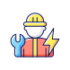

Result
සියලුම ප්රශ්න :
නිවැරදි පිළිතුරු ✅:
වැරදි පිළිතුරු ❌ :
ලකුණු ප්රතිශතය :
ඉලෙක්ට්රිකල් දැනුම
NVQ විභාග ප්රශ්න
නිවෙස් වයරින් දැනුම

රැකියා අවස්තා
ඉලෙක්ට්රිකල් දැනුම
NVQ විභාග ප්රශ්න
නිවෙස් වයරින් දැනුම
රැකියා අවස්තා